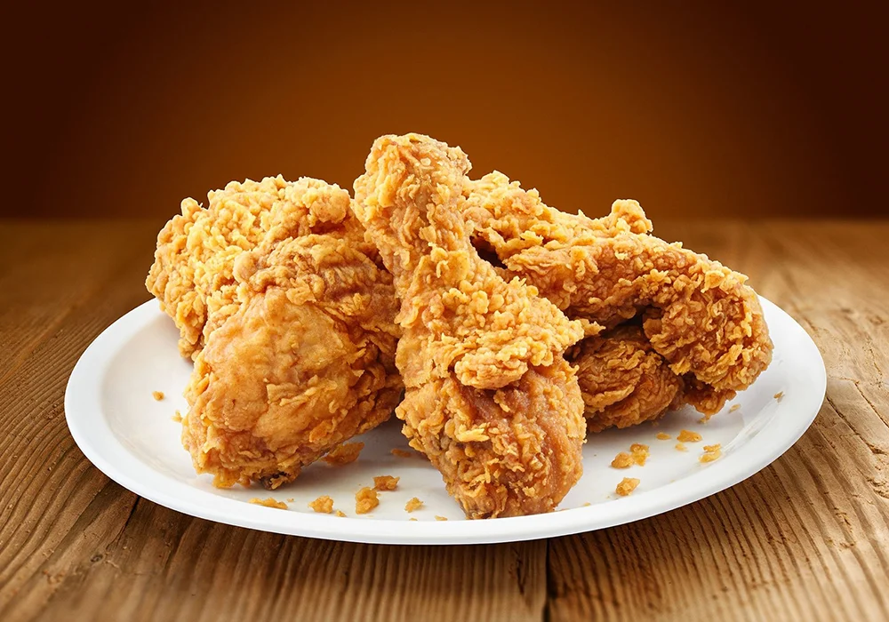

Fried Chicken

Description: A popular and iconic fast food.
Ingredients
- Chicken: 1 kg (thighs, wings or breasts)
- Unsweetened fresh milk: 240 ml
- Flour: 150 g
- Cornstarch: 50 g
- Seasonings: salt, pepper, garlic powder, onion powder
- Oil for deep frying.
Steps
- Prepare & Marinate: Wash and season the chicken. Let it rest for 30 minutes.
- Coat: Roll the chicken in flour, dip in beaten eggs, and roll in flour again.
- Fry: deep-fry in hot oil for 10 minutes until golden brown.
- Serve: Drain the excess oil on paper and enjoy.